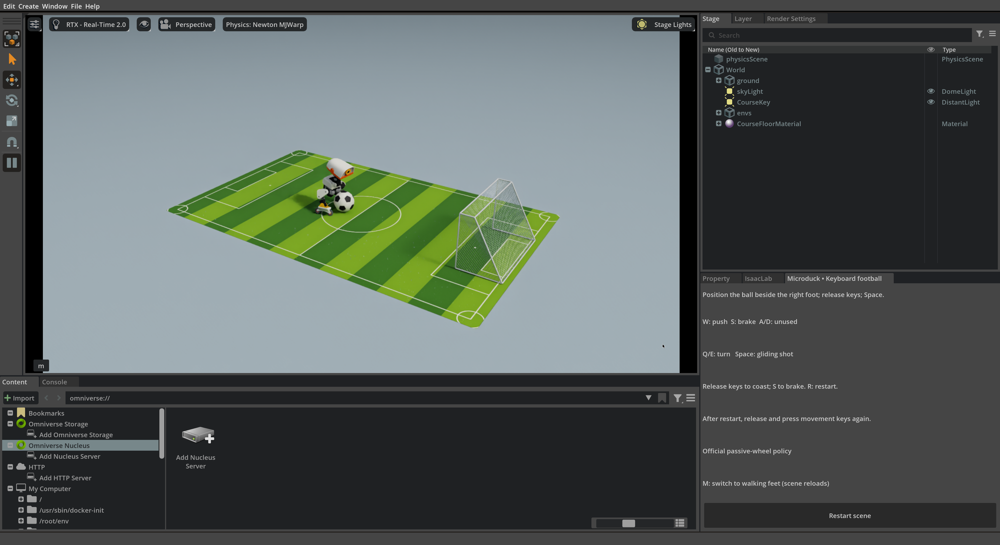

2.1 认识 Microduck：先来踢一场球#
先用键盘指挥 Microduck 走路、转向和踢球，在同一个窗口里切换到轮滑，再看看 Isaac Sim 如何把场景、机器人和预训练策略连接起来。
一只可以学习新技能的小机器人#
Microduck 是 Pollen Robotics 与 Hugging Face 推出的开源双足机器人。它有 14 个主动关节，可以通过训练获得行走、踢腿等技能。我们用 NVIDIA Isaac Sim 搭建可反复试验的场景，用 Isaac Lab 组织训练与评测，逐步让机器人自己找到足球并完成射门。先不训练：加载官方已经训练好的行走与右脚踢球 ONNX 策略，体验一次手动射门。
打开球场，用键盘试一试#
在 1.2 节准备的课程容器终端里运行下面的命令（需要重新进入容器时，见 1.2 节）。它打开 Isaac Sim，场景中是第 4、5 部分自主射门同样的绿色球场、足球和球门。
python3 scripts/run.py manual \
--seconds 600 \
--output outputs/manual-football-01
窗口打开时是步行模式。把输入法切换到英文，用鼠标点击仿真窗口，就可以用下表的按键操作；按键没有反应时，通常是中文输入法拦截了按键。按 M 切换到轮滑模式，同一个窗口会重新搭好球场、换上轮滑脚，大约需要几十秒。按键说明也显示在窗口右侧的 “Microduck • Keyboard football” 标签页里。
代码关键参数
模型。
run.py manual不需要模型参数：它读取容器内的/workspace/Microduck-Workshop/models（即宿主机仓库的models/，只读）。步行模式用其中的walk.onnx和kick-teacher.onnx，轮滑模式用official-browser/rollers.onnx。场景资产。 球场、足球、球门和机器人来自仓库的
lab/assets/：pitch_A.usda、official_ball.usda、steel_goal.usda、microduck_contact.usda，轮滑脚为rollers/microduck_rollers_analytic.usdc。起步。 小鸭子先锁住关节在球场上落稳，策略开始控制时再松开；M 键只在策略接管之后才生效。
切换模式。 按 M 时当前场景关闭，同一个窗口里重新搭好球场，换入另一套机器人配置和对应策略。
输出。
--output指定的outputs/manual-football-01在宿主机仓库的outputs/下。每次切换模式都会新建一个编号子文件夹，例如00-walking、01-rollers，两种模式的记录分开保存。--seconds是窗口最长运行的仿真时间。

步行模式。截图来自课程在容器中运行上面这条命令的一次真实会话。
按键 |
步行模式 |
轮滑模式 |
|---|---|---|
W / S |
向前 / 向后走 |
推进 / 制动（持续按住 S 可能开始倒滑） |
A / D |
向左 / 向右侧移 |
不使用 |
Q / E |
向左 / 向右转 |
左转 / 右转 |
松开按键 |
零速度指令，回到站立 |
继续滑行，不保证立即停住 |
空格 |
一次右脚踢球，然后回到站立 |
一次有限时的滑行推射辅助，不会踢腿 |
M |
切换到轮滑模式 |
切换到步行模式 |
R / Esc |
重置当前场景 / 退出 |
重置当前场景 / 退出 |
步行模式：先走到球旁边并停下，让球位于右脚前方、身体朝向球门，再按空格出脚。踢空了就调整站位；失去平衡就按 R 重来。这里由你判断球在哪里、应该朝哪走，策略只负责把指令变成关节动作。没能进球时想一想：是站位偏了、朝向不对，还是出脚时机不合适？这些判断正是第 4 部分要交给自主射门系统的任务。松开按键后的站立也由行走策略完成：它一直在运行，收到零速度指令就保持站立。
轮滑模式：四个轮子是被动轮，仍由原来的 14 个舵机调整腿部姿态完成推进、转向和制动，不会切换到走路或踢腿。先观察松开按键后仍会滑行，再练习提前减速；目标是把球碰进门，同时让小鸭子停在门前。W 给出的是推进量，并不对应以米每秒为单位的速度。比较两种方式：步行射门先停稳再出脚；轮滑射门通过运动中的接触传递动量，随后制动。


按 M 之后的轮滑模式，与上一张截图来自同一次会话、同一个窗口：场景重新搭建，脚换成了轮滑脚，按键说明也随之改变。
两种脚是两套不同的机器人配置
普通脚掌和官方轮滑脚的结构、质量和碰撞形状都不同，所以切换模式时程序会重新搭建场景、换入另一套机器人配置和对应的官方策略。这相当于在实验台上换了一副脚，并不表示真机能在运动中自己变形。四个轮胎保留官方外观、质量和惯量；为了稳定计算滚动接触，碰撞体用直径 30 毫米、宽 7.6 毫米的圆柱近似。真实轮胎的摩擦与变形尚未标定。
Isaac Sim 如何构成这场实验#
左右滑动查看完整图示
1USD 场景
USD 场景将机器人、球与球门放在同一空间。网格负责可见外形，几何与材质也会影响相机看到的图像。
2物理配置
质量、惯量、摩擦和碰撞体决定接触后的运动。相同外观可以对应不同物理配置，因此外观逼真不能代替物理检查。
3策略与输入
键盘提供期望的运动方向与速度，ONNX 策略把观测和指令转换为关节目标。
机器人 USD 除了可见网格，还包含关节、碰撞形状和质量属性：关节定义连接关系，碰撞形状决定接触位置，质量与惯量影响加速和转身，舵机模型决定目标角度如何变成实际运动。下面的代码按官网黑白足球设置半径 5 cm、质量 30 g。Isaac Sim 提供场景与渲染，Isaac Lab 的任务配置则接入 Newton 物理后端。
1在场景中登记足球
RigidObjectCfg 声明一个刚体；{ENV_REGEX_NS} 让每个并行环境都有自己的一颗球。
cfg.scene.ball = RigidObjectCfg(
prim_path="{ENV_REGEX_NS}/Ball",2设置形状与物理属性
半径 0.05 m、质量 0.03 kg，并启用碰撞与刚体动力学，Newton 才会计算球被踢后的运动。
spawn=sim_utils.SphereCfg(
radius=0.05,
mass_props=sim_utils.MassPropertiesCfg(mass=0.03),
collision_props=sim_utils.CollisionPropertiesCfg(),
rigid_props=UsdPhysicsRigidBodyCfg(rigid_body_enabled=True),
),3放到地面上
初始高度 0.05 m 正好等于半径，球刚好接触地面。
init_state=RigidObjectCfg.InitialStateCfg(pos=(0.0, 0.0, 0.05)),
)4套用共享的足球场景
configure_football 换入官网足球资产，加入球门与地面材质；style="A" 选择全课统一使用的绿色条纹球场。
# Apply the shared official-ball asset, goal and floor materials.
scene_profile = configure_football(cfg, style="A")先固定场景与硬件约定#
键盘射门与第 4、5 部分的自主射门使用同一块 1 × 1.6 米的绿色球场、直径 10 厘米、质量 30 克的官网黑白足球和固定式钢网球门。进球判定使用球门的净开口：宽 38.8 厘米、高 24.4 厘米。第 3 部分使用各节说明的训练地面和测试地形；换场地、灯光或室内背景的影响留到 5.4 节讨论。
场景参数
球门。 外尺寸宽 40 × 深 20 × 高 25 厘米；门框直径按 6 毫米计，两根立柱的中心距为 39.4 厘米。定位用中心距，进球判定用净开口，两者不要混用。
地面。 按刚性平面处理，没有模拟软垫的压缩或起翘；场地垫与实物地面的摩擦尚未标定。
机器人使用官方 Microduck CAD、基础质量与关节参数，以及带齿隙的全身碰撞模型。课程锁定 XL330 的 BAM 电机拟合、200 Hz 物理和 50 Hz 策略周期；15 个实体舵机中，行走策略控制 14 个，嘴部不由这份策略驱动。全身碰撞让头、腿与电池等部位摔倒后也能被地面托住，不会穿过地面。
这套仿真配置与真机仍有差距：相机对应 GC2093，仿真按 960 × 540、15 Hz 采样，70° 水平视场角尚未经过镜头标定；ToF 和身体 IMU 也是近似。因此它不能证明最新固件、各种硬件误差或 RK3566 上的完整部署都已复现。移到真机前，应核对实际硬件版本、电压、关节零位、镜头参数与端到端延迟。
步行模式如何切换行走与踢球策略#
文件 |
大小 |
作用 |
|---|---|---|
walk.onnx |
793,705 字节，约 0.79 MB |
速度非零时行走；速度为零时站立 |
kick-teacher.onnx |
793,685 字节，约 0.79 MB |
右脚踢球动作 |
步行与踢球使用固定版本的官方权重（版本链接见本页参考资料），可能与官网网页模拟器中最新的步行权重不同。轮滑实验使用官网的轮滑模型。
观测 61 维，经过 512、256、128 个神经元的三个隐藏层，输出 14 维关节动作。指向或选中某一层、某一组连线，可查看它的维度；输入层和输出层还会列出每一维的含义。
61 维输入按什么顺序排列
61 个数按下表顺序拼接，归一化后送入网络。前 48 个描述机器人此刻的状态和上一步动作，后 13 个是希望它做什么。三组关节数据都使用与输出相同的 14 个关节顺序。
| 序号 | 个数 | 内容 | 单位 | 类型 |
|---|---|---|---|---|
| 1–3 | 3 | 机身角速度，依次绕前后轴、左右轴和上下轴 | rad/s | 状态 |
| 4–6 | 3 | 重力方向在机身前后轴、左右轴和上下轴上的投影 | 无量纲（单位向量） | 状态 |
| 7–20 | 14 | 各关节相对默认姿态的角度偏差 | rad | 状态 |
| 21–34 | 14 | 各关节角速度 | rad/s | 状态 |
| 35–48 | 14 | 上一步输出的 14 个原始动作 | 与输出相同 | 上一步动作 |
| 49–51 | 3 | 期望的前进速度、横向速度和转向角速度 | m/s、m/s、rad/s | 指令 |
| 52–55 | 4 | 颈部俯仰、头部俯仰、头部偏航、头部侧倾的期望角度偏移 | rad | 指令 |
| 56–61 | 6 | 机身姿态指令偏移：前后、左右、上下位置，以及横滚、俯仰、偏航角 | m；rad | 指令 |
机身姿态的 6 个指令保留在接口中；本课的行走实验把它们固定为 0。
14 维输出对应哪些关节
策略每 20 ms 输出 14 个数，表示各关节目标角度相对默认姿态的偏移（rad）。动作管理器把它加到默认姿态上，得到绝对目标角，需要时再扣除编码器偏置校准，然后交给舵机的位置控制。每一步都以默认姿态为基准重新计算目标角。
| 序号 | 关节 |
|---|---|
| 1 | left_hip_yaw左髋偏航 |
| 2 | left_hip_roll左髋侧倾 |
| 3 | left_hip_pitch左髋俯仰 |
| 4 | left_knee左膝 |
| 5 | left_ankle左踝 |
| 序号 | 关节 |
|---|---|
| 6 | neck_pitch颈部俯仰 |
| 7 | head_pitch头部俯仰 |
| 8 | head_yaw头部偏航 |
| 9 | head_roll头部侧倾 |
| 序号 | 关节 |
|---|---|
| 10 | right_hip_yaw右髋偏航 |
| 11 | right_hip_roll右髋侧倾 |
| 12 | right_hip_pitch右髋俯仰 |
| 13 | right_knee右膝 |
| 14 | right_ankle右踝 |
策略网络读入 61 维观测，依次经过 512、256、128 维隐藏层，输出 14 个关节动作。行走与踢球两个官方策略结构相同、权重不同，因此表现为不同的技能。训练时配合使用的价值网络不在图中。
1每个策略步读取一次观察
观测管理器更新历史，给出 policy 观察；行走策略先算出默认动作。
# Read the state once per policy step, then select the active skill.
obs = env.observation_manager.compute(update_history=True)["policy"]
action = walk(obs)2计算踢球权重
策略周期为 0.02 s（50 Hz），phase 是踢球开始后经过的秒数。前 0.14 s 权重为 1，之后 0.12 s 内线性降到 0。
if kick_start is not None:
phase = (step - kick_start) * 0.02
weight = 1.0 if phase < 0.14 else max(0.0, 1.0 - (phase - 0.14) / 0.12)3混合两个策略的动作
torch.lerp 按权重在行走动作与踢球动作之间插值；权重为 0 时直接沿用行走动作。
if weight:
action = torch.lerp(action, kick(obs), weight)4转换为关节目标
动作管理器把网络输出映射为关节目标，再交给执行器和物理仿真。
# The action manager maps network outputs to joint targets.
env.action_manager.process_action(action)手动实验让踢球动作完整保持 0.14 秒，再用 0.12 秒平滑切回行走策略的站立动作。这两个时间只影响技能之间的切换，官方权重保持不变。
策略文件不到 1 MB，但运行完整仿真还要为场景、物理和渲染占用显存，不能按文件大小估算。1.2 节运行过的 inspect-model 会显示策略文件的 SHA-256、输入输出张量形状和用到的算子。
刚才是谁在决定下一步#
检查理解
刚才您已经完成了哪些机器人还不会自主完成的判断？
查看解析
您识别了足球和球门、估计了距离、选择了接近路线和出脚位置，并决定何时踢球。第 4 部分先由人把这些判断写成板载策略，第 5 部分再训练 GR00T 从示范数据中学习它们，5.4 节讨论环境变化与数据扩展。
2.2 节先看看这些动作背后的机械结构，以及策略和物理引擎按什么节奏协同工作。